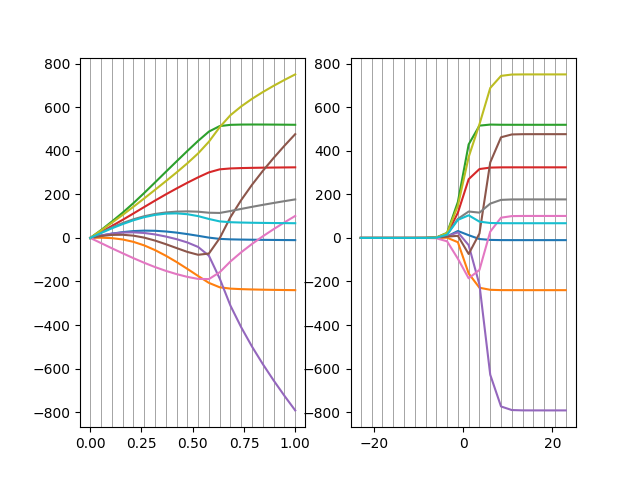
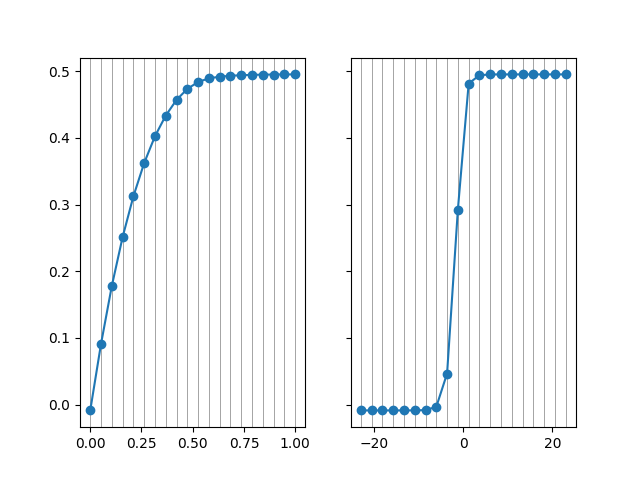

Note
Click here to download the full example code
Example using scikit learn data¶
We’re going to compare the performance of the fracrdige algorithm with the performance of a standard approach to selection of regularization parameters: log-spaced selection of alphas between very minimal regularization and very strong regularization.
- 
- 
import numpy as np
import matplotlib.pyplot as plt
from fracridge import FracRidge
from sklearn import datasets
from sklearn.linear_model import Ridge
from sklearn.model_selection import cross_val_predict
from sklearn.metrics import r2_score
X, y = datasets.load_diabetes(return_X_y=True)
n_alphas = 20
rr_alphas = alphas = np.logspace(-10, 10, n_alphas)
rr_coefs = []
rr_coefs = np.zeros((X.shape[-1], n_alphas))
rr_pred = np.zeros((y.shape[-1], n_alphas))
for aa in range(len(rr_alphas)):
RR = Ridge(alpha=rr_alphas[aa], fit_intercept=True)
RR.fit(X, y)
rr_coefs[:, aa] = RR.coef_
rr_pred[:, aa] = cross_val_predict(RR, X, y)
fracs = np.linspace(0, 1, n_alphas)
FR = FracRidge(fracs=fracs, fit_intercept=True)
FR.fit(X, y)
fr_pred = cross_val_predict(FR, X, y)
fig, ax = plt.subplots(1, 2)
ax[0].plot(fracs, FR.coef_.T)
ylims = ax[0].get_ylim()
ax[0].vlines(fracs, ylims[0], ylims[1], linewidth=0.5, color='gray')
ax[0].set_ylim(*ylims)
ax[1].plot(np.log(rr_alphas[::-1]), rr_coefs.T)
ylims = ax[1].get_ylim()
ax[1].vlines(np.log(rr_alphas[::-1]), ylims[0], ylims[1], linewidth=0.5,
color='gray')
ax[1].set_ylim(*ylims)
test_y = np.tile(y, (fr_pred.shape[-1], 1)).T
rr_r2 = r2_score(test_y, rr_pred, multioutput="raw_values")
fr_r2 = r2_score(test_y, fr_pred, multioutput="raw_values")
fig, ax = plt.subplots(1, 2, sharey=True)
ax[0].plot(fracs, fr_r2, 'o-')
ylims = ax[0].get_ylim()
ax[0].vlines(fracs, ylims[0], ylims[1], linewidth=0.5, color='gray')
ax[0].set_ylim(*ylims)
ax[1].plot(np.log(rr_alphas[::-1]), rr_r2, 'o-')
ylims = ax[1].get_ylim()
ax[1].vlines(np.log(rr_alphas[::-1]), ylims[0], ylims[1], linewidth=0.5,
color='gray')
ax[1].set_ylim(*ylims)
plt.show()
Total running time of the script: ( 0 minutes 3.630 seconds)